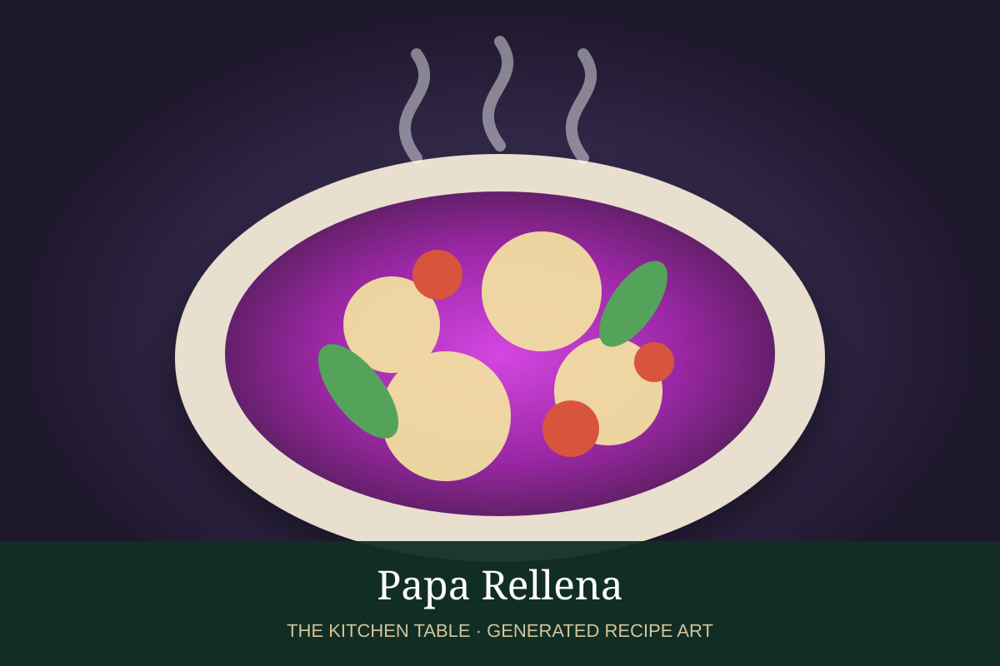

← Back to all recipes
APPETIZER · PERUVIAN
Papa Rellena
Crisp golden potato croquettes filled with seasoned beef, onion, olives, egg, and raisins.
1 hr 15 minMakes 8

Photo: Eat Peru
Ingredients
- 2 lb starchy potatoes
- 1 tbsp butter
- 1 egg yolk
- 1 lb ground beef
- 1 onion, finely chopped
- 2 garlic cloves, minced
- 1 tbsp ají panca paste
- 1/2 tsp cumin
- 1/3 cup chopped black olives
- 2 hard-boiled eggs, chopped
- 2 tbsp raisins, optional
- Flour for dusting
- 2 eggs, beaten
- Neutral oil, for frying
- Salt and pepper
Preparation
- Boil potatoes until tender, peel, mash, and mix with butter, egg yolk, and salt. Cool.
- Brown beef, then add onion, garlic, ají panca, cumin, olives, egg, and raisins. Cool filling.
- Flatten a portion of potato in your hand, add filling, and seal into an oval shape.
- Dust lightly with flour and dip in beaten egg.
- Fry at 350°F until deeply golden. Drain and serve with salsa criolla.